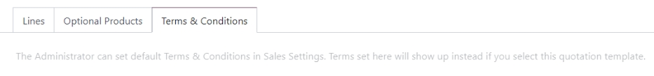

Planes de suscripción¶
Los Planes de suscripción son plantillas de cotización que se usan para pre-configurar cotizaciones con los productos de suscripción. Use los planes de suscripción para crear rápidamente órdenes de suscripción.
Configure planes de suscripción¶
Para configurar planes de suscripción, vaya a . Luego, haga clic en Nuevo para crear un nuevo plan o seleccionar uno ya existente para editarlo.
Puesto que la aplicación Suscripciones de Odoo está estrechamente integrada con la aplicación Ventas , los planes de suscripción usan el mismo formulario como plantillas de cotización.

El formulario del plan de suscripción incluye las siguientes opciones:
Nombre: Introduzca un nombre para el plan de suscripción en la aparte superior de la página.
La cotización vence después de: Introduzca el número de días después de los cuales la cotización vence, comenzando desde el día en que envía la cotización al cliente. Deje este campo en cero para que la cotización no tenga fecha de vencimiento.
Confirmación en línea: Seleccione las casillas junto a Firma o Pago para permitir que el cliente confirme su orden de suscripción al firmar o pagar la cotización. Active ambos campos para que el cliente pueda escoger una opción. Deje ambos en blanco para confirmar la cotización solo desde el backend.
Correo de confirmación: seleccione una plantilla de correo electrónico para el correo de confirmación que se enviará de forma automática al cliente después de confirmar la cotización. Deje este campo vacío para no enviar nada.
Para crear una nueva plantilla de correo electrónico, introduzca un nombre para la plantilla, luego haga clic Crear y editar.
Para editar una plantilla de correo que ya existe, seleccione una del menú desplegable, luego haga clic en la flecha Enlace interno al final de la línea.
Recurrencia: Seleccione el periodo recurrente que usará el plan. Los periodos recurrentes que están disponibles aquí son los mismos que están configurados en .
Seleccionar una Recurrencia convierte la plantilla de cotización en un plan de suscripción y activa las siguientes opciones adicionales:
Duración: Elija si el plan de suscripción no tiene fecha de finalización (Para siempre) o una duración Fija.
Si establece la duración como Para siempre, entonces el plan de suscripción se renovará hasta que el cliente o la empresa finalicen manualmente la suscripción.
Si establece la duración como Fija, entonces introduzca una fecha de Terminar después de , lo que determina la cantidad de tiempo tras la cual la suscripción terminará automáticamente.
Autocancelable: Seleccione esta casilla para permitir que el cliente cancele su suscripción desde el portal de cliente.
Cancelación automática: Introduzca el número de días tras los cuales las suscripciones pendientes de pago que pasaron la fecha límite de pago se cancelan automáticamente.
Diario contable: Seleccione el diario contable en el cual se registrarán las facturas para este plan de suscripción. Deje este campo en blanco para usar el diario de ventas con la secuencia más baja.

En la pestaña Líneas , cree las líneas de la orden para la cotización. Haga clic en Agregar un producto, selecciones un producto para incluir el plan, y luego introduzca la Cantidad y la Unidad de Medida. Agregue tantos productos como quiera a las líneas de la orden.
En la pestaña Productos opcionales , introduzca cualquiera de los productos opcionales que el cliente pueda añadir a su cotización antes de confirmar la orden.
Si el plan de suscripción tiene términos y condiciones, especiales, agreguelos en la pestaña Términos y Condiciones. Si los términos y condiciones están especificados en un plan, se usarán estos en lugar de los términos y condiciones predeterminados establecidos en los ajustes de la aplicación Ventas.
Use los planes de suscripción en las cotizaciones¶
Lac cotizaciones para los productos de suscripción se pueden crear tanto en la aplicación Suscripciones como en *Ventas.
Desde el tablero de Suscripciones , haga clic en Nuevo para crear una nueva cotización. Luego, seleccione un plan de suscripción en el campo Plan de suscripción.
La Recurrencia, los productos y otros campos del plan se llenan automáticamente. La cotización se puede modificar después si es necesario.
Desde el tablero de Ventas , haga clic en Nuevo para crear una nueva cotización. Luego, seleccione un plan de suscripción en el campo Plantilla de cotización.
Todas las órdenes de suscripción aparecerán en el tablero de Suscripciones sin importar si se crearon en la aplicación Suscripciones or Ventas.